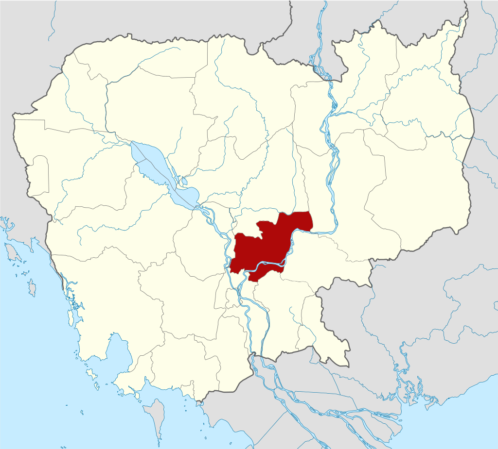

ខេត្ត កំពង់ចាម

ខេត្តកំពង់ចាម គឺជាខេត្តមួយរបស់ប្រទេសកម្ពុជា ដែលស្ថិតនៅលើដីទំនាបកណ្តាលនៃទន្លេមេគង្គ។ មានព្រំប្រទល់ជាប់ខេត្តកំពង់ឆ្នាំងនៅខាងលិច ខេត្តកំពង់ធំនិងខេត្តក្រចេះខាងជើងនិងឦសាន ខេត្តត្បូងឃ្មុំនៅខាងកើត និងខេត្តព្រៃវែងនិងខេត្តកណ្តាលនៅខាងត្បូង។ ខេត្តកំពង់ចាមត្រូវបានបែងចែកជាផ្លូវការជាពីរខេត្តនៅថ្ងៃទី៣១ ខែធ្នូ ឆ្នាំ២០១៣ ដីទាំងអស់នៅខាងលិចទន្លេមេគង្គនៅតែជាខេត្តកំពង់ចាម នៅដីនៅខាងកើតទន្លេមេគង្គក្លាយជាខេត្តត្បូងឃ្មុំ។ មុនពេលការបែងចែកនេះ ខេត្តកំពង់ចាមបានលាតសន្ធឹងទៅខាងកើតជាប់ព្រំដែនអន្តរជាតិជាមួយប្រទេសវៀតណាម ជាខេត្តធំទី១១ នៃប្រទេសកម្ពុជា ហើយមានប្រជាជនចំនួន ១ ៦៨០ ៦៩៤ នាក់ គឺជាខេត្តដែលមានប្រជាជនច្រើនជាងគេនៅក្នុងប្រទេសកម្ពុជា។ ខេត្តកំពង់ចាមមានទីរួមខេត្តកំពង់ចាមជាទីក្រុង។
សេចក្តីផ្តើម
ខេត្តកំពង់ចាមគឺជាទឹកដីដ៏ចំណាស់មួយមានស្លាកស្នាមប្រវត្តិសាស្រ្តសម័យមុនអង្គរ និងសម័យក្រោយមកទៀតដ៏ច្រើនសន្ធឹកសន្ធាប់។ខេត្តកំពង់ចាមមានប្រាសាទបុរាណ ទួលបុរាណ ព្រមទាំងបុរាណវត្ថុផ្សេងៗនៅសេសសល់ជាច្រើនកន្លែងណាស់នៅក្នុងទឹកដីខេត្តមួយនេះ។ មិនតែប៉ុណ្ណោះមានទាំងធនធានធម្មជាតិដូចជា ព្រៃ ភ្នំ ទីវាល ទន្លេ បឹង និងប្រភពទឹកផ្សេងៗ ដែលជាសក្តានុពលសម្រាប់វិស័យទេសចរណ៍ និងការវិនិយោគ។ ខេត្តកំពង់ចាមមានតំបន់ទេសចរណ៍ដូចជា ប្រាសាទនគរបាជ័យ ប្រាសាទភ្នំជើងព្រៃ ប្រាសាទភ្នំហាន់ជ័យ ប្រាសាទព្រះធាតុទឹកឆា ប្រាសាទភ្នំត្រប់ ភ្នំប្រុស ភ្នំស្រី កសិទេសចរណ៍ថ្មដាទឹកឆា និងឆ្នេរខ្សាច់កោះប៉ែនជាដើម។
ទីតាំងភូមិសាស្រ្ត
ខេត្តកំពង់ចាមគឺជាខេត្តមួយ ដែលមានវ័យចំណាស់មួយនៅក្នុងប្រទេសកម្ពុជា ហើយស្ថិតនៅភាគខាងជើងឆៀងខាងកើតរាជធានីភ្នំពេញ។ខេត្តនេះមានចម្ងាយប្រហែល ១២៤គីឡូម៉ែត្រពីរាជធានីភ្នំពេញ ដែលកាត់តាមផ្លូវជាតិលេខ៦ និងផ្លូវជាតិលេខ៧។ ខេត្តកំពង់ចាមមានផ្ទៃដីចំនួន ៤៥៤៩គីឡូម៉ែត្រការ៉េ ដែលមានក្រុងចំនួន ១ ស្រុកចំនួន៩ ឃុំចំនួន១៦៩ សង្កាត់ចំនួន៤ ភូមិចំនួន១៧៥៨។ កាលដើមឡើយខេត្តកំពង់ចាមក្រុងចំនួន២ និងស្រុកចំនួន១៤ នៅដើមអាណត្តិនៃរាជរដ្ខាភិបាលកម្ពុជាបានបំបែកខេត្តនេះជាពីរនៅថ្ងៃទី៣១ ខែធ្នូ ឆ្នាំ២០១៣ ដោយព្រះករុណាព្រះបាទនរោត្តម សីហមុនី ព្រះមហាក្សត្រនៃព្រះរាជាណាចក្រកម្ពុជា។ ខេត្តនេះស្ថិតនៅវាលទំនាបកណ្តាលនៃទន្លេមេគង្គ ដែលមានព្រំប្រទល់ខាងលិចជាប់ខេត្តកំពង់ឆ្នាំង ខាងជើងជាប់ខេត្តកំពង់ធំ និងខេត្តក្រចេះ ខាងកើតជាប់ខេត្តត្បូងឃ្មុំ ខាងត្បូងជាប់ខេត្តកណ្តាល និងខេត្តព្រៃវែង។
ក្រមស្រុក-ក្រុង
ស្រុក-ក្រុង
ឡាតាំង
ចំនួនឃុំ
០៣០១
បាធាយ
Batheay
១២
០៣០២
ចំការលើ
Chamkar Leu
៨
០៣០៣
ជើងព្រៃ
Cheung Prey
១០
០៣០៤
កំពង់ចាម
Kampong Cham
៤
០៣០៥
កំពង់សៀម
Kampong Siem
១៥
០៣០៦
កងមាស
Kang Meas
១១
០៣០៧
កោះសូទិន
Kaoh Soutin
៨
០៣០៨
ព្រៃឈរ
Prey Chhor
១៥
០៣០៩
ស្រីសន្ធរ
Srey Santhor
១៤
០៣១០
ស្ទឹងត្រង់
Stueng Trang
១២
ខេត្តកំពង់ចាម មានស្រុក ៩ និងក្រុង ១
៩៣ ឃុំ និង ៤ សង្កាត់